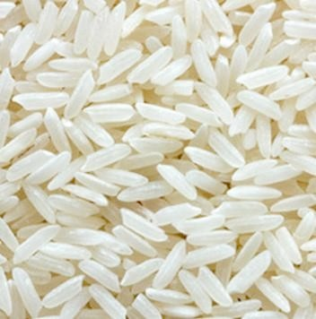

14


Food and Human Nutrition

Form Two
Revision exercise 1
Choose the correct answer.
1. The importance of using flavourings during cooking is to ___________
(a) improve the taste of dishes.
(b) reduce the cooking time.
(c) increase the food’s shelf life.
(d) add nutritional value.
2. Stabilizers and thickeners are primarily used in foods to:
(a) Enhance the appearance and texture
(b) Increase flavour specifically sweetness
(c) Preserve the food from microorganisms
(d) Add colour to make the food attractive
3. Excessive use of food additives may cause:
(a) Improved flavour and nutrition
(b) No effect on consumers’ health
(c) Harmful health effects to the body
(d) Effect in storage and cooking times
4. The function of preservatives in food is to ___________
(a) activate spoilage microorganisms.
(b) prevent microbial spoilage.
(c) increase food colour and palatability.
(d) add flavour and improve texture.
5. The use of food colours in prepared foods is:
(a) Essential in all foods to improve nutrition
(b) Always required for quality and safety
(c) Optional and depends on the type of food
(d) Harmful and should be avoided entirely

17/09/2025 16:30